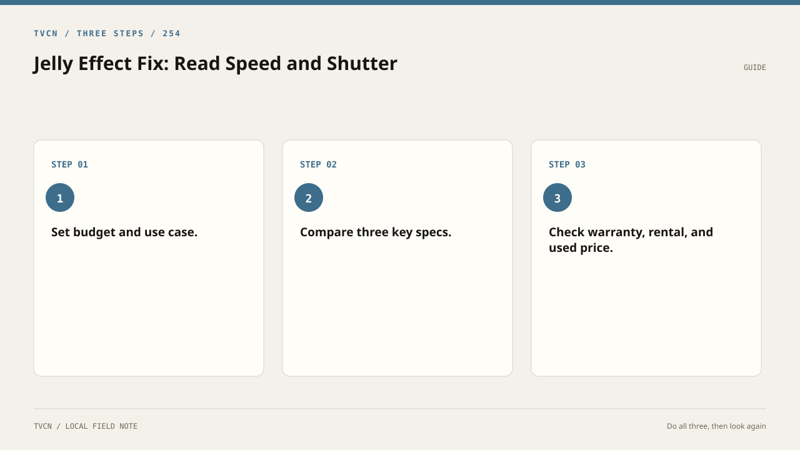

Read the direction of motion for rolling shutter
Rolling shutter shows most in fast lateral moves: poles lean, faces narrow, hands bend. Avoid fast pans, use a wider lens and steadier support; stabilization can crop but cannot restore shape.
For fast action, use a global-shutter camera or slow the action; do not “fix” heavy skew in post.
Limits
Mild skew is acceptable. The audience does not freeze-frame poles; if the action reads, do not reshoot everything.
On set
Pan fast across a railing and check for bent lines. Change the camera or use a global shutter; post cannot fix it.
Three-step flow

Do this
Rolling shutter comes from slow readout plus fast motion. Change the camera or use a global shutter before touching shutter speed.
- Pan across a railing or window and review whether straight lines bend.
- Use a faster-readout camera or a global shutter.
- Reduce fast whips; use locked-off shots and slow pans.
Avoid
Do not blame the lens; CMOS readout speed is the cause.
Image note. Covers, diagrams and step images on this page are editorial illustrations or structure diagrams, not photographs of a test performed here; they are not evidence of measured gear performance. Where an image is AI-assisted, the caption says so. Read the test conditions in the text before treating an image as proof.